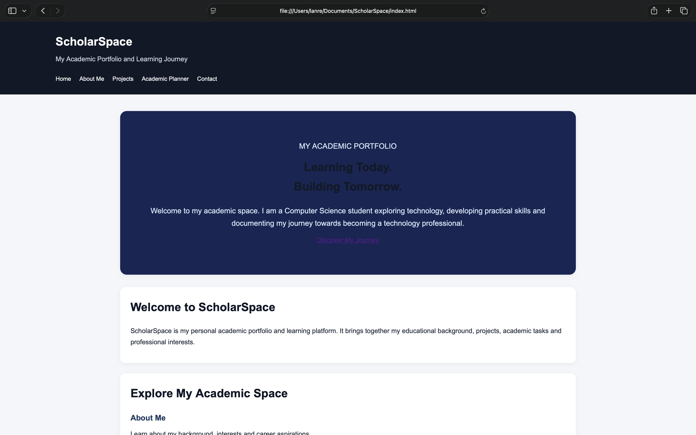
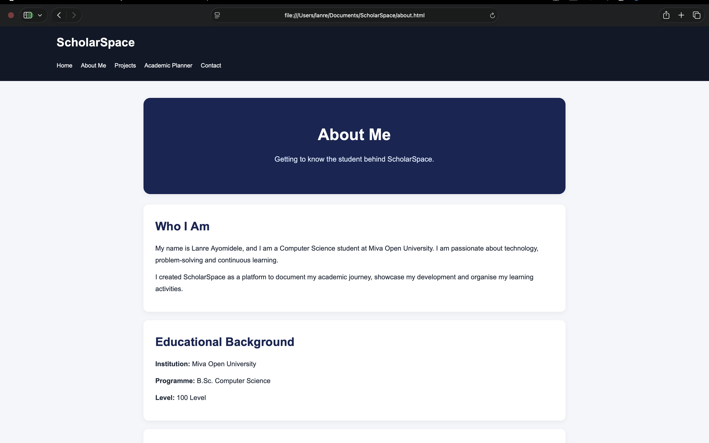
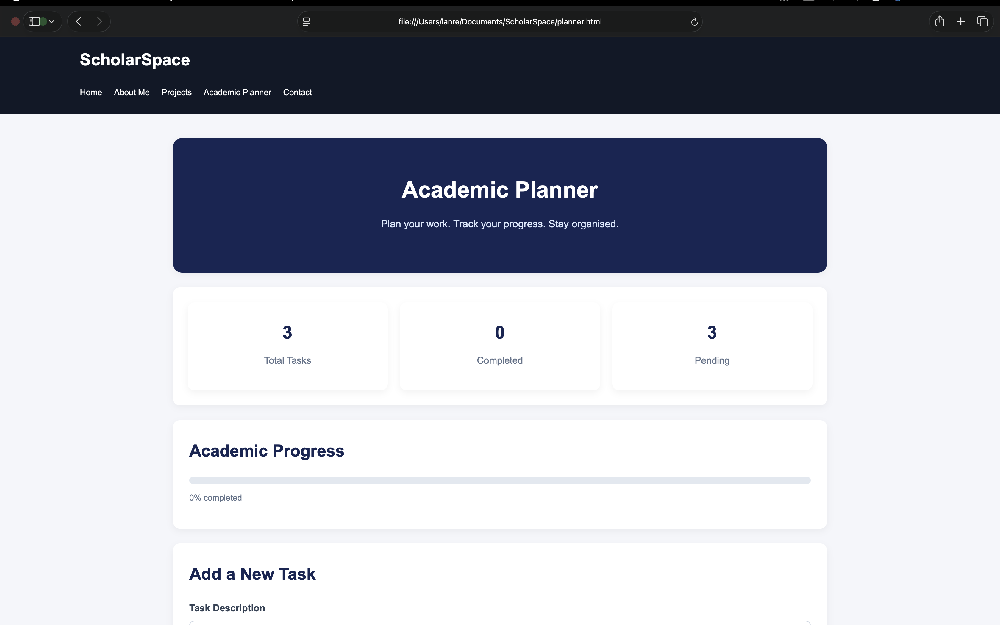

01

ScholarSpace
Web Development
A responsive student portfolio and academic management website designed to organise academic activities, showcase projects and present student information.
Currently DevelopingA collection of my learning experiences, ideas and practical work.
This page showcases projects I am developing as I build my knowledge of Computer Science and Web Development. Each project represents an opportunity to apply concepts and improve my technical abilities.

Web Development
A responsive student portfolio and academic management website designed to organise academic activities, showcase projects and present student information.
Currently Developing
HTML and CSS
A personal website concept designed to introduce an individual, highlight their interests and present their educational and professional goals.
Learning Project
JavaScript
An academic productivity application concept that allows students to organise tasks, monitor progress and manage deadlines.
Planned Project